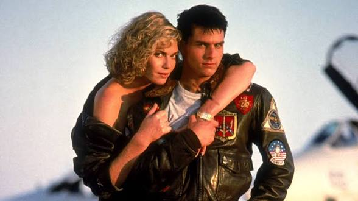

🏍️ 🎖️ 🫡 TOP GUN (1986) — CERTIFIED MGC XF-42

⚖ MGC INITIAL INQUEST
- ASSET TITLE: Top Gun (1986) — The Miramar Recruitment-Brochure & Volleyball Ledger
- OFFICIAL REGISTRY GRADE: XF-42 (Extremely Fine / Circulated MTV-Era Specimen)
- JURISDICTION: Lower Tribunal Room / 1980s Naval Aviation & Pop-Culture Docket
- PRESIDING FORENSIC EXAMINER: Judge Dex, Chief of R&D & Action Judge
- CASE FILE: #068
📜 THE INITIAL BENCH ASSESSMENT
Under the 5x numismatic lens, Tony Scott’s 1986 box-office juggernaut delivers undeniable aerial cinematography—real F-14 Tomcats tearing through clouds—backed by an iconic Harold Faltermeyer and Kenny Loggins synth-rock audio track. However, once the nostalgic sunset glare fades, the narrative planchet reveals an astonishingly thin plot, reckless military fantasy, and heavy 1980s melodrama that keep it completely out of the AU-50+ vault and pin it down in the circulated XF-40 to XF-45 tier:
🚨 The 3-Flaw Defect Log:
1. The “Zero-Plot Recruitment Commercial” Structural Void (Narrative Thinness)
The Defect:
Strip away the montage sequences, slow-motion sweat, and sunset silhouettes, and there is virtually no actual story—just an extended two-hour Navy recruitment ad where pilots fly, play shirtless volleyball, sing in a bar, and graduate early for a surprise final skirmish.-
The Forensic Data:
Sliding the 5x lens across the script exposes massive narrative dead zones. Characters like Charlie (Kelly McGillis) exist primarily as glossy romance props, and the rivalry with Iceman resolves with a single handshake after one chaotic dogfight.
2. Uncalibrated Naval Aviation & Court-Martial Physics (Procedural Fantasy)
The Defect:
Maverick repeatedly violates direct orders, buzzes control towers, abandons his wingman, and flies dangerously below the hard deck—yet instead of being grounded or court-martialed on the spot, he is rewarded with Top Gun placement and an immediate combat deployment.The Forensic Data:
In real naval aviation, Maverick’s reckless hot-dogging would have ended his flight status before the first act concluded. Operating on pure 1980s ego-fantasy rather than authentic military discipline introduces severe procedural wear across the entire coin.
3. The Uncalibrated “MiG-28” Cold War Dogfight Optics (Technical & Ballistic Friction)
-
The Defect:
The mysterious enemy fighters are generic black-painted Northrop F-5s labeled “MiG-28s” flying nose-to-nose within 50 feet of F-14 Tomcats in visual dogfights rather than engaging with long-range radar missiles. -
The Forensic Data:
While visually exciting for 1986 theater audiences, the compressed dogfight spacing, recycled explosion footage, and simplified “inverted Polaroid” maneuvers leave noticeable technical handling scuffs when compared to grounded aviation realism.
⚖️ THE FINAL JUDICIAL DECREE
- With all three structural, procedural, and tactical defects permanently locked on the record, the 1980s corporate hyper-glow is officially stripped away. While Tony Scott’s real F-14 Tomcat aerial cinematography and the iconic synth-rock soundtrack keep the specimen out of the lower race-car bins, the zero-plot recruitment-ad structure and pure naval fantasy prevent any crossover into the AU vault.
- Permanently sealed in the archives as a Certified MGC XF-42 Choice Circulated Specimen. Case #068 is officially closed. 🍷✈️🏐🕶️
CLOSING

• © 2026 MOVIE GRADING CONSENSUS. All Sovereign Rights Reserved.